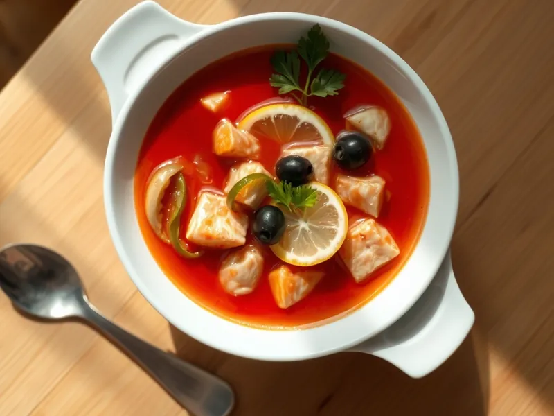

Солянка рыбная
Кисло-солёная солянка с сёмгой, треской, солёными огурцами, маслинами и лимоном
50 мин5 порц.259 ккал на порциюБ 24 · Ж 15 · У 6Русская кухня
Открыть в приложении: порции, таймеры, список покупок
Продукты на 5 порц.
- Сёмга / лосось300 г
- Треска300 г
- Огурцы солёные3 шт
- Оливки / маслины80 г
- Лук репчатый1 шт
- Томатная паста2 ст. л.
- Лимон0,5 шт
- Растительное масло2 ст. л.
- Лавровый лист2 шт
- Соль0,5 ч. л.
- Вода1800 мл
- Петрушка по желаниюпо вкусу
Как готовить
- Вскипятите воду на сильном огне, положите треску и сёмгу целыми кусками и варите на слабом огне 10 минут. Достаньте рыбу, удалите кости и разберите на крупные кусочки.
- Нарежьте лук и обжарьте на масле на среднем огне 5 минут до мягкости. Добавьте томатную пасту и огурцы соломкой, тушите 5 минут.
- Переложите зажарку в бульон и варите на слабом огне 10 минут.
- Верните рыбу, добавьте маслины и лавровый лист, попробуйте и при необходимости подсолите. Варите 3 минуты.
- Дайте настояться под крышкой 10 минут. Подавайте с кружком лимона и петрушкой в каждой тарелке.
Совет. Рыбу варите целыми кусками и разбирайте потом: мелкие кусочки в солянке быстро развалятся.